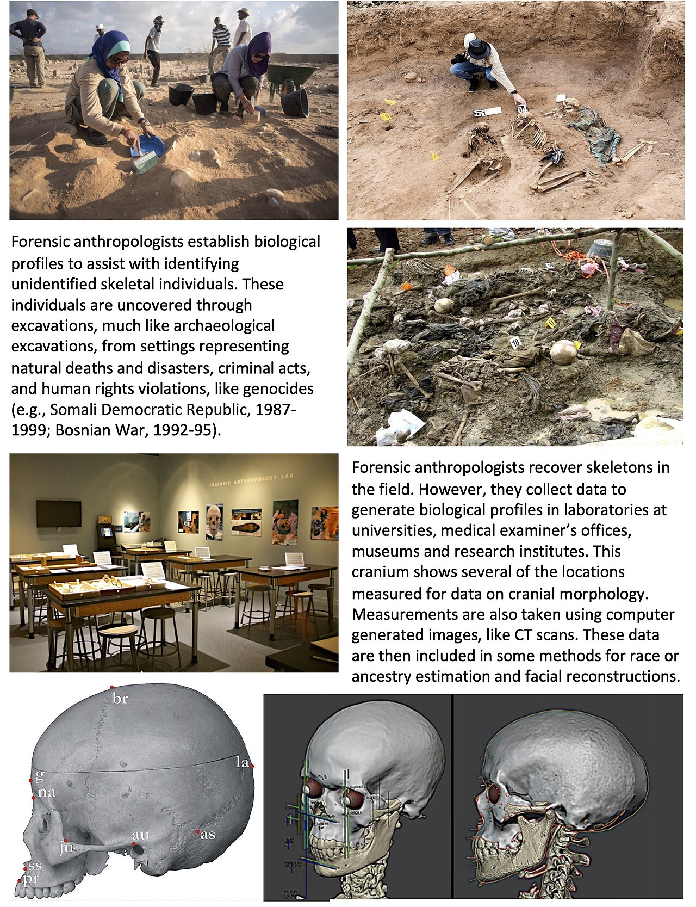
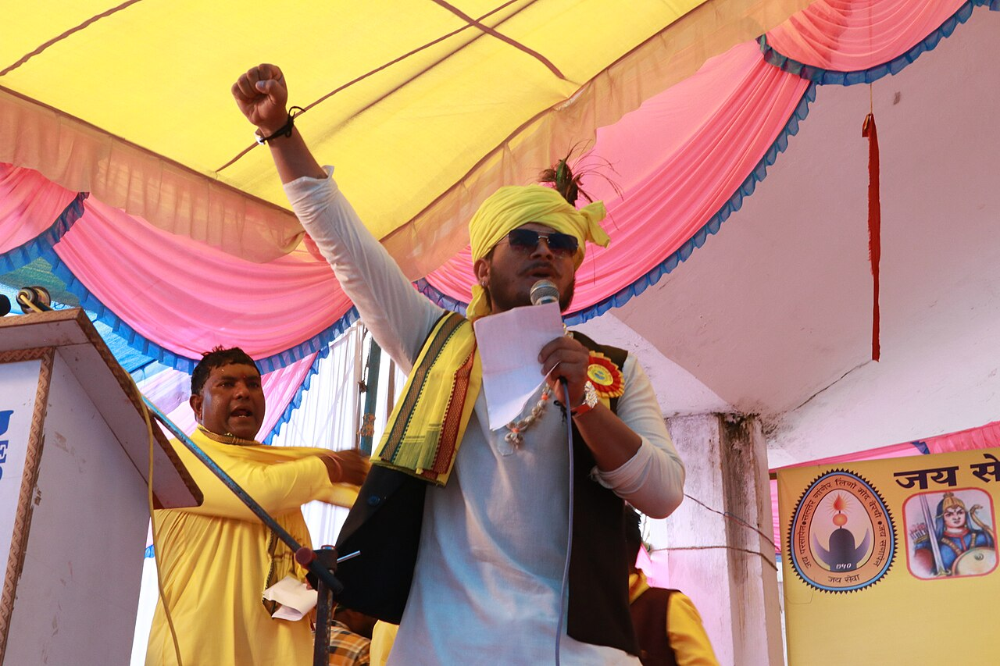
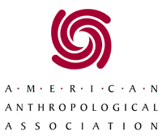
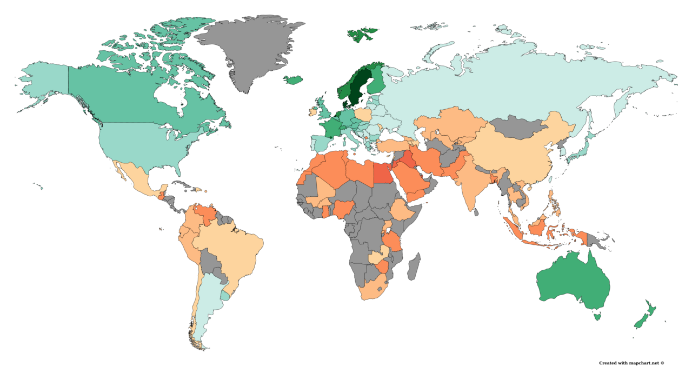

Applied Anthropology
For most of this book, anthropology has been a way of understanding — of learning how a kinship system organizes obligation, how a ritual moves a person from one social status to another, how an economy runs on reciprocity rather than price. This chapter asks a different question: what happens when you use that understanding? Applied anthropology puts ethnographic method to work on problems that will not wait for the next monograph — a reforestation project that keeps failing, a tuberculosis program patients keep abandoning, a mass grave that needs names, a software interface nobody can figure out. It is the largest employer of anthropologists alive today, and it is also where the discipline's ethics get tested hardest, because the moment your findings change what someone does to somebody else, you have stopped being a neutral observer. This chapter covers what applied work is, where it happens, how it shades into advocacy, what it owes the people it studies, and where the field is heading.
By the end of this chapter you can
- Define applied anthropology and distinguish it from basic (academic) anthropology and from practicing anthropology.
- Explain why the emic perspective, holism, and long-term participant observation are the applied anthropologist's central assets.
- Describe the working roles anthropologists take — researcher, evaluator, cultural broker, impact assessor, advocate — with real examples.
- Compare development, medical, business/design, and forensic anthropology, and name a landmark project in each.
- Explain advocacy anthropology and engaged anthropology, and evaluate the critiques leveled at both.
- State the core obligations in the AAA Principles of Professional Responsibility, starting with do no harm.
- Analyze cases where applied anthropology went wrong — Project Camelot, the Human Terrain System, the Havasupai blood samples — and say what principle each violated.
- Identify emerging directions: multi-sited and digital ethnography, climate work, studying up, and the decolonizing turn.
Section 1Applied anthropology: using anthropology to solve real problems

What applied anthropology is
Applied anthropology is the use of anthropological theory, method, and data to identify, assess, and solve practical problems. It is sometimes called the discipline's "fifth field," sitting alongside cultural, biological, archaeological, and linguistic anthropology — though that framing is a little misleading, because application draws on all four. A forensic anthropologist reading trauma on a femur is doing applied biological anthropology; a consultant redesigning a hospital discharge process is doing applied cultural anthropology; a cultural resource manager surveying a highway corridor before construction is doing applied archaeology.
The idea is older than the label. Bronisław Malinowski — the same fieldworker whose Trobriand research gave us the kula ring and the modern standard of long-term immersion — published an essay in 1929 called "Practical Anthropology," arguing that colonial administrators were making expensive, humiliating mistakes that an ethnographer could have prevented. The essay is uncomfortable reading now, since the "practical" client he had in mind was a colonial government, but it named the core claim that still holds: policy fails when it is built on a mistaken picture of how people actually live. The Society for Applied Anthropology was founded in 1941, and its journal Human Organization remains the field's home.
Two related terms are worth separating. Applied anthropology describes the work; practicing anthropology describes the career — an anthropologist employed outside a university, in a firm, agency, hospital, museum, or NGO. Today a majority of new anthropology PhDs in the United States build careers outside the professoriate, which means the "applied" wing is no longer a side door. It is the main entrance.
Why ethnography is the right tool
Surveys tell you what people say they do. Randomized trials tell you whether an intervention worked on average. Neither tells you why a program collapses in month seven, and that is exactly the question a client usually has. The anthropologist's advantage is the emic perspective — the insider's account of what an action means, in the categories the insiders themselves use — recovered through participant observation, and then set against an etic analytic frame the outsider brings. Clifford Geertz called the resulting description "thick": not the twitch of an eyelid but the wink, the parody of the wink, and the rehearsal of the parody. A program evaluator who only counts eyelid movements will get the answer exactly wrong.
Holism is the second asset. Anthropology insists that an economic problem is also a kinship problem, a religious problem, and a political problem. Introduce a cash crop into a village organized by generalized reciprocity — the open-ended giving among kin that Marshall Sahlins distinguished from balanced and negative reciprocity — and you have not simply added income. You have created a household that can refuse a request, which the neighbors will read as an insult. Push a development scheme through a state bureaucracy into a community with no chiefs, no headmen, and no standing authority to sign for anyone (an acephalous tribe rather than a chiefdom or state, in Elman Service's classic typology) and the "community consent" on file may represent one ambitious man.
This is the antithesis of the armchair. James Frazer assembled The Golden Bough from other people's reports without leaving Cambridge; applied anthropology cannot be done that way, because the whole value proposition is that someone went and looked.
The roles anthropologists play
John van Willigen and Erve Chambers, among others, have catalogued the working roles of applied practice. They are worth knowing because they map directly onto job descriptions.
| Role | What it involves | Real example |
|---|---|---|
| Researcher | Collects primary ethnographic data to answer a client's question | Needs assessment before a clinic opens in an underserved district |
| Evaluator | Judges whether a program worked, and why or why not | Post-project review of a water-and-sanitation intervention |
| Cultural broker | Translates between two groups who misread each other | Interpreting patient explanatory models for a clinical team |
| Impact assessor | Forecasts social consequences of a proposed change (social impact assessment) | Displacement analysis before a dam or pipeline is approved |
| Policy researcher | Supplies evidence shaping regulation or law | Ethnographic input to housing or food-assistance rules |
| Advocate | Openly supports a community's own stated goals | Expert testimony in an Indigenous land claim |
| Trainer | Teaches cultural competence and method to non-anthropologists | Briefing humanitarian staff on local burial practice |
Method adapts to the clock. Classic fieldwork runs a year or more; a client may need an answer within the month. Applied anthropologists therefore developed rapid assessment procedures (RAP) — short, team-based, triangulated studies combining focused observation, key-informant interviews, and group discussion. RAP trades depth for speed and is honest about it.
Two early projects define the field's promise and its peril. Sol Tax's Fox Project (begun 1948, with the Meskwaki of Iowa) invented action anthropology: researchers would help the community pursue goals the community itself defined, and would learn theory from the attempt rather than arriving with a plan. The Vicos Project (Cornell University and Peru, 1952–1966) went further — Allan Holmberg's team leased a highland hacienda and its resident labor force, then restructured it, eventually transferring ownership to the residents. Vicos raised incomes and education. It also made anthropologists the patrón, and critics have asked ever since whether a benevolent landlord is still a landlord.
- Applied anthropology uses anthropological method to solve practical problems; practicing anthropology is the career built outside academia.
- Malinowski's 1929 "Practical Anthropology" named the case early — and its colonial client is a permanent warning about who applied work serves.
- The core assets are the emic perspective, holism, and participant observation; RAP compresses them when deadlines demand it.
- Action anthropology (Tax, Fox Project) begins from community-defined goals; the Vicos Project shows how easily intervention slides into control.
Section 2Where anthropologists work

Development anthropology
Development anthropology means working inside development projects — for the World Bank, USAID, ministries, and NGOs — to make them fit the societies they land in. It should be distinguished from the anthropology of development, which studies the development industry itself as a cultural system, often critically (Arturo Escobar's Encountering Development is the standard statement).
The critical case everyone cites is James Ferguson's study of a Canadian-funded rural project in Thaba-Tseka, Lesotho, published as The Anti-Politics Machine (1990). Planners described Lesotho as an isolated subsistence peasantry needing modern inputs. It was in fact a labor reserve whose men worked South African mines and whose cattle functioned less as meat than as a store of value and a claim on kin — what Ferguson called the "bovine mystique." A livestock-marketing scheme built on the planners' picture could not work, because selling the herd meant liquidating a social relationship. Ferguson's larger argument stings: the project failed on its own terms while quietly expanding state bureaucracy into the highlands, converting a political question about migrant labor into a technical question about cattle.
The counter-case is Gerald Murray's agroforestry work in Haiti. Earlier reforestation efforts had failed for a generation: seedlings were framed as public goods for erosion control, planted on land farmers did not securely hold, and were treated as government property farmers were forbidden to cut. Murray, who had done dissertation fieldwork on Haitian land tenure, reframed the tree as a crop — fast-growing timber the farmer owned outright and could harvest and sell whenever he chose — and routed seedlings through NGOs rather than the state. Beginning in 1981, the project put tens of millions of seedlings into the ground with participation from hundreds of thousands of households. The technical package barely changed. The tenure and ownership logic did, and that was the whole difference.
Medical anthropology
Medical anthropology studies health, illness, and healing as cultural and biological phenomena at once. Its foundational distinction, from Arthur Kleinman, separates disease (the biomedical practitioner's object — a lesion, a pathogen, a lab value) from illness (the patient's lived experience of being unwell, embedded in family and moral life). Kleinman's explanatory model interview is a set of eight questions asking a patient what they call the problem, what they think caused it, why it started when it did, what it does to the body, how severe it is, what treatment they expect, what they fear most about it, and what trouble it has caused them — a compact tool for surfacing the emic view inside a single clinical encounter.
Paul Farmer, physician and anthropologist, built Partners In Health from a clinic in Haiti's Central Plateau and brought into medical anthropology the concept of structural violence — a term coined by the peace researcher Johan Galtung in 1969 and given clinical teeth by Farmer: the social and economic arrangements — poverty, racism, unequal geography — that predictably put some bodies in harm's way while leaving others untouched. Farmer's argument against calling tuberculosis patients "noncompliant" is the applied lesson in miniature: when a patient a day's walk from the clinic with no bus fare misses appointments, the failure is structural, not attitudinal, and the fix is transportation and community health workers, not a lecture. Nancy Scheper-Hughes, working in a Brazilian shantytown she called the Alto do Cruzeiro (Death Without Weeping, 1992), documented how routine infant mortality reshaped maternal grief itself — and later founded Organs Watch to investigate the global traffic in transplant organs, a deliberate move from documentation to intervention.
The West African Ebola epidemic of 2014–2016 is the clearest recent proof of the field's value. Early response messaging treated funerals as a hazard to be banned; families kept washing and touching the dead anyway, because the alternative — a body zipped into plastic by strangers, buried unseen — violated obligations to the dead that structure the entire moral world of the living. Anthropologists mobilized through the Ebola Response Anthropology Platform helped design "safe and dignified burial" protocols that preserved viewing, prayer, and family participation while breaking transmission. Note the mechanism: rites of passage in Arnold van Gennep's sense — separation, liminality, reincorporation — are not decoration around a death. Victor Turner showed that the liminal phase does real social work; interrupt it and you leave a family and a village suspended, which is why a banned funeral becomes a secret funeral.
Business, organizational, and design anthropology
Corporations discovered ethnography when they noticed that what people say in a focus group is a poor guide to what they do at home. Lucy Suchman, at Xerox PARC, filmed users failing to operate a "helpful" photocopier and argued in Plans and Situated Actions (1987) that human action is improvised in response to circumstance, not executed from a stored plan — a finding that reshaped human–computer interaction. Her colleague Julian Orr (Talking About Machines, 1996) rode along with Xerox service technicians and found that the real repair knowledge lived not in the manuals but in "war stories" swapped over breakfast, which is why an efficiency drive that eliminated the breakfast would have destroyed the company's diagnostic capacity. Genevieve Bell ran Intel's user-experience research on the same premise. Today "design anthropology" and UX research are among the largest destinations for anthropology graduates, and the method — watch what people actually do, in the place they actually do it — is unchanged from the Trobriands.
Forensic anthropology
Forensic anthropology is applied biological anthropology: the analysis of skeletal remains for medico-legal purposes. From bone the analyst builds a biological profile — estimated age at death, sex, stature, ancestry — then reads trauma (perimortem fracture patterns, gunshot beveling, sharp-force cut marks), pathology, and taphonomy to estimate time since death. Facilities such as the University of Tennessee's Anthropology Research Facility, founded by William Bass in 1981, exist to study decomposition systematically.
The field's moral weight comes from human rights work. Clyde Snow trained a group of Argentine students in 1984 to exhume the graves of the desaparecidos — those forcibly disappeared under the military junta; they became the Argentine Forensic Anthropology Team (EAAF) and have worked in dozens of countries since. Comparable teams operate in Guatemala (FAFG, on the massacres of the internal armed conflict) and in the Balkans, where the International Commission on Missing Persons combined anthropology with large-scale DNA matching to identify the majority of the Srebrenica dead. The deliverable is a name returned to a family — and evidence admissible in court.
| Area | Typical employer | Question it answers | Landmark case |
|---|---|---|---|
| Development | World Bank, USAID, NGOs, ministries | Why does this project keep failing here? | Ferguson, Lesotho; Murray, Haiti agroforestry |
| Medical | Health ministries, WHO, hospitals, PIH | Why do patients decline, delay, or abandon care? | Kleinman's explanatory models; Ebola burials |
| Business / design | Tech firms, consultancies, market research | How do people really use this product or work? | Suchman at PARC; Orr's photocopier technicians |
| Forensic | Medical examiners, courts, human rights teams | Who was this person, and what happened to them? | Snow and the EAAF, Argentina |
- Development anthropology works inside projects; the anthropology of development studies the industry critically (Ferguson's "anti-politics machine").
- Murray's Haiti agroforestry succeeded by reframing trees as an owned crop — tenure, not technology, was the constraint.
- Medical anthropology splits disease from illness; Kleinman's explanatory models and Farmer's structural violence are its workhorse concepts.
- Safe-and-dignified Ebola burials worked because they preserved the rite of passage (van Gennep, Turner) instead of abolishing it.
- Business/design anthropology (Suchman, Orr, Bell) exports participant observation to products and workplaces.
- Forensic anthropology builds a biological profile from bone; the EAAF turned it into a human-rights instrument.
Section 3Anthropology and advocacy

From describing to taking sides
Advocacy anthropology is research conducted explicitly in support of a community's own political goals. The older ideal of the detached observer never really held — Franz Boas, the founder of American anthropology, spent his career using anthropological evidence as a weapon against scientific racism, demonstrating with immigrant head-form data that supposedly fixed racial types shifted within a single generation, and insisting that culture, not biology, explained human difference. Margaret Mead took the discipline to a mass public and to wartime government service, serving as executive secretary of the National Research Council's Committee on Food Habits. Boas also drew anthropology's first great ethics fight: his 1919 letter in The Nation denouncing anthropologists who had used fieldwork as cover for espionage got him censured by the American Anthropological Association — a censure the association finally rescinded in 2005.
The modern term of art is engaged anthropology: sustained collaboration in which the research question, and sometimes the research design, come from the community. Where classic ethnography asked "what is going on here?", engaged work asks "what is going on here, and what do you want done about it?"
What advocacy actually looks like
The most consequential advocacy work is unglamorous and evidentiary. In land and title claims, anthropologists document continuous connection to territory, customary tenure, and the descent systems that determine who holds rights — whether a group reckons membership patrilineally, matrilineally, or through cognatic descent decides who the claimants legally are. Australia's Mabo decision (1992) and the subsequent Native Title Act (1993) created a standing demand for exactly this expertise. In Canada, Delgamuukw v. British Columbia turned on whether Gitxsan and Wet'suwet'en oral histories counted as evidence; the trial judge largely dismissed them, and the Supreme Court in 1997 held that oral tradition must be placed on an equal footing with written history — a ruling with anthropological argument in its bones.
In museums and heritage, the Native American Graves Protection and Repatriation Act (NAGPRA, 1990) obliges US institutions receiving federal funds to inventory human remains and cultural items and repatriate them to affiliated descendants. The long fight over the skeleton called Kennewick Man, or the Ancient One — found in Washington State in 1996, litigated for years, and finally returned to a coalition of Columbia Basin tribes in 2017 after ancient-DNA analysis confirmed Native American affinity — marked a durable shift in who is presumed to hold authority over the past. Advocacy organizations founded by anthropologists, notably Cultural Survival (founded by David and Pia Maybury-Lewis in 1972), work on Indigenous land, language, and self-determination.
Stuart Kirsch's two decades with the Yonggom of Papua New Guinea show what long-haul engagement costs and yields. Tailings and waste rock from the Ok Tedi copper mine devastated the Fly River system the Yonggom depend on; Kirsch worked with them through international litigation against the mine's operators, translating between village grievance, NGO campaigning, and courtroom procedure. He also wrote candidly about the strain — being called on to be lawyer, publicist, and fundraiser at once, and knowing that the anthropologist's presence changes the movement it joins.
| Mode of advocacy | What the anthropologist supplies | Example |
|---|---|---|
| Expert witness | Documentation of customary tenure, descent, and continuous connection | Australian native title claims after Mabo (1992) |
| Evidentiary standing for oral tradition | Argument that oral history is systematic testimony, not folklore | Delgamuukw v. British Columbia (1997) |
| Repatriation | Cultural affiliation determinations under law | NAGPRA (1990); return of the Ancient One, 2017 |
| Litigation support | Environmental and social impact documentation, translation across forums | Kirsch and the Yonggom, Ok Tedi mine |
| Public education | Countering racist or dehumanizing accounts with evidence | Boas against scientific racism |
The critiques, which are serious
Advocacy raises the question of authorization: who asked you to speak, and on whose behalf? Communities are not unanimous. Supporting "the community's goals" can mean amplifying whichever faction is most legible to outsiders — often the English-speaking, male, formally educated one. The Indigenous scholar Vine Deloria Jr. put the case bluntly in Custer Died for Your Sins (1969), arguing that anthropologists had spent a century extracting careers from Native communities while returning nothing usable. Linda Tuhiwai Smith's Decolonizing Methodologies (1999) developed the point into a program: research is itself a colonial instrument unless communities set the questions, control the data, and share the credit.
The constructive answer has been collaborative and participatory action research — community members as co-investigators, not informants; data-sharing agreements written before fieldwork begins; findings returned in a usable form and language. Tax's action anthropology anticipated this in 1948; the difference now is that communities increasingly have the legal and institutional standing to require it.
- Advocacy anthropology supports a community's stated goals; engaged anthropology builds the research agenda with them.
- Boas used anthropology against scientific racism and was censured for exposing anthropologist-spies — the AAA rescinded it in 2005.
- Land-claim work turns on documenting descent systems and customary tenure; Delgamuukw (1997) gave oral tradition evidentiary weight.
- NAGPRA (1990) and the return of the Ancient One shifted authority over the past toward descendant communities.
- Deloria and Tuhiwai Smith's critiques drove the field toward collaborative and participatory models in which communities set the questions.
Section 4The ethics of application

Do no harm, and the obligations that follow
Applied work raises an ethical problem basic research can dodge: there is a client, and the client's interests may diverge from the interests of the people studied. Anthropology's answer, codified in the AAA Principles of Professional Responsibility (first adopted 1971, substantially revised in 2012), is that the primary obligation runs to the people and communities studied — ahead of the funder, the employer, and the discipline. The current statement organizes practice around seven principles.
| Principle | What it demands in practice | Classic failure |
|---|---|---|
| Do no harm | Anticipate harms — legal, physical, reputational, economic — and forgo research that cannot avoid them | Human Terrain System fieldwork in active conflict zones |
| Be open and honest | Disclose funder, purpose, and intended use; no covert research | Fieldwork used as cover for intelligence gathering |
| Obtain informed consent | Ongoing, comprehensible, revocable permission — not a signature once | Havasupai blood samples reused without consent |
| Weigh competing obligations | Name conflicts between client, community, and colleagues openly | Project Camelot's undisclosed military sponsorship |
| Make results accessible | Return findings to the community in usable form and language | Data extracted, published abroad, never seen locally |
| Protect records | Secure field notes, recordings, and identifiers against subpoena and leak | Boston College Belfast Project interview tapes |
| Maintain respectful relationships | Fair credit, fair pay, mentorship, no exploitation of students or staff | Uncredited local research assistants |
When anthropology was weaponized
The codes exist because of specific disasters. During the Second World War, anthropologists including Mead worked for the US government — and others served as "community analysts" inside the War Relocation Authority camps where Japanese Americans were incarcerated, studying a population that could not leave and had not consented to anything.
Project Camelot (1964–1965) was a US Army–funded social science program to model the causes of insurgency, with Chile as an early target. Its military sponsorship was not disclosed to the Chilean scholars approached; when the Norwegian sociologist Johan Galtung, invited to take part, refused and made the sponsorship public, the resulting scandal reached the Chilean Senate and the US State Department, and the project was cancelled in 1965. A parallel controversy over anthropologists' counterinsurgency work in Thailand followed in 1970. Together they produced the AAA's first formal Principles of Professional Responsibility in 1971.
The lesson had to be relearned. The US Army's Human Terrain System (2007–2014) embedded social scientists with brigades in Iraq and Afghanistan to map local social structure. In 2007 the AAA Executive Board declared it "an unacceptable application of anthropological expertise," and the association's commission on engagement with security and intelligence agencies elaborated the reasoning: research conducted by armed personnel in an occupied country cannot yield voluntary informed consent, cannot guarantee that findings will not be used to target the people who provided them, and cannot be published openly for peer scrutiny. Every one of the seven principles fails at once.
Consent, confidentiality, and who owns the data
Informed consent in anthropology is a process, not a form. Participant observation blurs the edges of "the study" — a conversation at a funeral may become data — so consent must be renewed, explained in the local language and in local terms, and revocable. Literacy-based consent forms can themselves be harmful where signing a document for an outsider carries political risk.
Confidentiality is harder than it looks. Arthur Vidich and Joseph Bensman's Small Town in Mass Society (1958) used pseudonyms for the upstate New York village they studied, but residents identified themselves and their neighbors instantly from the detail, and the town responded with a mocking parade float bearing an effigy of the authors. Pseudonyms do not anonymize a place where only one person holds a given office.
The landmark consent case is the Havasupai litigation. Beginning in 1990, Arizona State University researchers collected blood samples from members of the Havasupai Tribe for a study of the community's high rate of type 2 diabetes. The samples were later used for research on schizophrenia, inbreeding, and population migration — the last directly contradicting the tribe's own account of its origin in the Grand Canyon. The tribe sued; the case settled in 2010 with a payment of $700,000, return of the remaining samples, and other assistance. The precedent it set is now standard: consent is specific to a stated purpose, biological samples and data carry the community's stake with them, and secondary use requires going back and asking. Institutional review boards, tribal research review boards, and pre-negotiated data-sharing agreements are the machinery built in response.
- The anthropologist's primary obligation is to the people studied, above funder or employer.
- The AAA Principles of Professional Responsibility (1971; revised 2012) center do no harm, transparency, informed consent, accessibility, and record protection.
- Project Camelot (undisclosed military sponsorship) produced the 1971 code; the Human Terrain System was declared an unacceptable application in 2007.
- Informed consent is ongoing and purpose-specific; the Havasupai settlement (2010) established that secondary use of samples requires fresh consent.
- Pseudonyms are weak protection in small communities — Small Town in Mass Society is the cautionary tale.
Section 5The future: anthropology in a changing world

New objects, same method
The classic field site was a bounded place you could walk across. Almost nothing anthropologists now study stays put. George Marcus proposed multi-sited ethnography in 1995 as the response: follow the thing, the person, the money, the story, or the metaphor across the locations that constitute a single system — a garment from a Dhaka factory floor to a Rotterdam container port to a Chicago sales rack. The unit of analysis becomes the connection.
Digital worlds get the same treatment. Tom Boellstorff conducted two years of participant observation entirely inside the virtual world Second Life, publishing Coming of Age in Second Life (2008) — a title nodding to Mead — and argued that a culture can be studied in its own terms wherever people make meaning together, without needing to chase participants offline first. Bonnie Nardi did comparable work in World of Warcraft, published as My Life as a Night Elf Priest (2010). The methodological point is conservative: the fieldwork standard has not changed, only the location.
Climate and environment have become central. Susan Crate's long research with Viliui Sakha cattle-and-horse herders in northeastern Siberia traces what happens to a subsistence system, a calendar, and a cosmology when permafrost thaws and the ground itself becomes unreliable — work she frames as "climate ethnography," insisting that global models need local meaning to be actionable. Anthropologists of disaster, pandemics, and infrastructure work the same seam: a levee, a vaccine rollout, and a supply chain are all cultural artifacts before they are technical ones.
Studying up, and the decolonizing turn
In a 1972 essay, "Up the Anthropologist," Laura Nader asked why the discipline overwhelmingly studied the poor and the colonized rather than the institutions that shape their lives — and called for studying up: ethnographies of banks, regulators, law firms, insurers, corporate boards. That call has been answered by a large literature on finance, bureaucracy, science, and technology, and it neatly inverts the old power gradient of fieldwork.
Alongside it runs the discipline's reckoning with its own colonial formation. Anthropology grew up alongside empire; its museums hold objects and remains taken without consent; its authority was long exercised over people who could not answer back. The decolonizing turn shows up as concrete practice: repatriation of remains and objects, co-authorship with community researchers, community-controlled archives and data sovereignty, publication in local languages, open access so findings are not paywalled away from the people described, and hiring and citation practices that stop treating scholars from the Global South as sources rather than theorists.
Why it still matters
Broad cultural models — national scores for individualism, tidy regional types, ranked stages of society — are seductive and thin. They flatten internal variation, freeze cultures that are always changing, and confuse a statistical average with a way of life. Ethnography's stubborn, slow contribution is to complicate them from the inside, and that is precisely why organizations keep hiring anthropologists after the dashboard fails to explain something. The intellectual equipment travels: cultural relativism as an analytic discipline — understanding a practice in its own context before judging it, which is a method rather than a moral surrender; comparison across the human range; holism; and the emic commitment to how people describe their own lives.
| Emerging area | Question it asks | Anchor example |
|---|---|---|
| Multi-sited ethnography | How do dispersed places form one system? | Marcus (1995): follow the thing, the person, the metaphor |
| Digital / virtual ethnography | Is online life culture in its own right? | Boellstorff, Coming of Age in Second Life (2008) |
| Climate & environment | What does warming do to a livelihood and a cosmology? | Crate with Viliui Sakha herders, Siberia |
| Studying up | How do powerful institutions actually make decisions? | Nader, "Up the Anthropologist" (1972) |
| Decolonizing research | Who sets the question, holds the data, gets the credit? | Tuhiwai Smith (1999); repatriation under NAGPRA |
| Health & pandemics | Why do people accept or refuse an intervention? | Ebola burial redesign, West Africa, 2014–2016 |
- Multi-sited ethnography (Marcus, 1995) follows people, things, and stories across the sites that make up one system.
- Digital ethnography treats online worlds as cultures in their own right (Boellstorff, Second Life).
- Climate ethnography (Crate) links global environmental change to local livelihoods and cosmologies.
- Studying up (Nader, 1972) redirects ethnography toward powerful institutions.
- The decolonizing turn is concrete: repatriation, co-authorship, data sovereignty, open access, and community-set questions.
The chapter in one breath
- Applied anthropology uses ethnographic theory and method on practical problems; practicing anthropology is the career outside the university, and it is now where most anthropologists work.
- The advantage is the emic perspective plus holism — recovering what a practice means to the people doing it, which is the piece surveys and dashboards routinely miss.
- Anthropologists work as researchers, evaluators, cultural brokers, impact assessors, and advocates; rapid assessment procedures adapt the method to short deadlines.
- Development work succeeds by fixing meaning and ownership (Murray's Haitian trees) and fails by misreading the local economy (Ferguson's Lesotho cattle).
- Medical anthropology separates disease from illness (Kleinman) and exposes structural violence (Farmer); the Ebola response worked once burials were redesigned as intact rites of passage.
- Business and design anthropology (Suchman, Orr, Bell) and forensic anthropology (Snow, the EAAF) show how far the method travels — from a photocopier to a mass grave.
- Advocacy is unavoidable but must be authorized: Boas against scientific racism, land claims and NAGPRA repatriation, and the Deloria and Tuhiwai Smith critiques that pushed the field toward collaborative research.
- Ethics is the load-bearing wall — do no harm, informed consent, transparency, accessible results — and Project Camelot, the Human Terrain System, and the Havasupai case are the reasons the rules read as they do.
ReferenceWords worth knowing
A quick reference for the terms in this chapter — skim it now, or circle back whenever a word trips you up.
- Action anthropology
- An approach, developed by Sol Tax in the Fox Project, in which researchers help a community pursue goals the community itself defines, generating theory from the attempt.
- Advocacy anthropology
- Research conducted openly in support of a studied community's own political, legal, or economic goals.
- Applied anthropology
- The use of anthropological theory, method, and data to identify, assess, and solve practical problems.
- Biological profile
- The estimate of age at death, sex, stature, and ancestry that a forensic anthropologist builds from skeletal remains.
- Cultural broker
- An applied role in which the anthropologist translates between two groups — such as clinicians and patients — who systematically misread each other.
- Cultural relativism
- The analytic discipline of understanding a practice within its own cultural context before evaluating it; a method, not a suspension of moral judgment.
- Design anthropology
- Ethnographic research applied to the creation of products, services, and interfaces, grounded in observing real use rather than reported preference.
- Development anthropology
- Applied work inside development projects and agencies, as distinct from the anthropology of development, which studies the development industry critically.
- Emic and etic perspectives
- The emic view describes belief and behavior in the categories and meanings insiders use; the etic view frames the same material in the outside analyst's comparative and theoretical categories. Applied work needs both.
- Engaged anthropology
- Sustained collaboration in which the research agenda is set with, not merely about, the community studied.
- Explanatory model
- Arthur Kleinman's concept for a person's own understanding of what their illness is, what caused it, and what should be done about it.
- Forensic anthropology
- Applied biological anthropology: analysis of skeletal remains for legal and human-rights purposes, including identification and trauma interpretation.
- Illness (vs. disease)
- The patient's lived, socially embedded experience of being unwell, distinguished from disease, the biomedical pathological process.
- Informed consent
- Voluntary, comprehensible, purpose-specific, and revocable permission to participate in research — understood in anthropology as an ongoing process rather than a single signature.
- Medical anthropology
- The study of health, illness, and healing as simultaneously cultural and biological phenomena.
- Multi-sited ethnography
- George Marcus's strategy of following a person, object, story, or process across the multiple locations that together constitute one system.
- NAGPRA
- The Native American Graves Protection and Repatriation Act (1990), requiring US institutions receiving federal funds to inventory and repatriate Native human remains and cultural items.
- Practicing anthropology
- Professional anthropological employment outside academia — in agencies, firms, hospitals, museums, and NGOs.
- Rapid assessment procedures (RAP)
- Short, team-based, triangulated ethnographic studies designed to deliver usable findings on a policy or program timetable.
- Social impact assessment
- Systematic forecasting of the social consequences — displacement, livelihood loss, disruption of kin networks — of a proposed project or policy.
- Structural violence
- Social and economic arrangements that predictably expose particular populations to harm and premature death. Coined by Johan Galtung (1969) and made central to medical anthropology by Paul Farmer.
- Studying up
- Laura Nader's call to direct ethnography at powerful institutions and elites rather than only at the poor and marginalized.